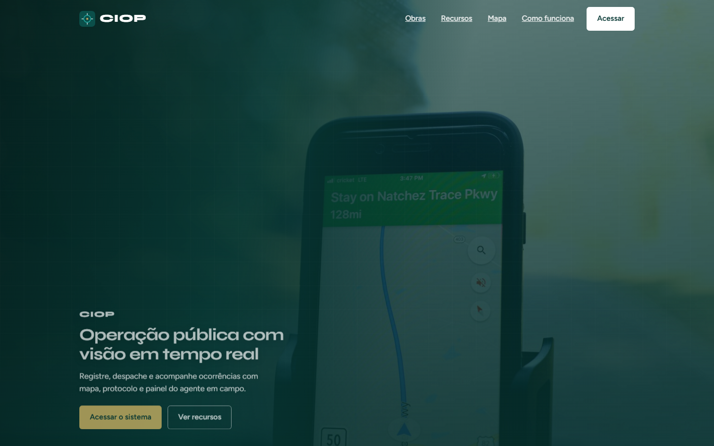
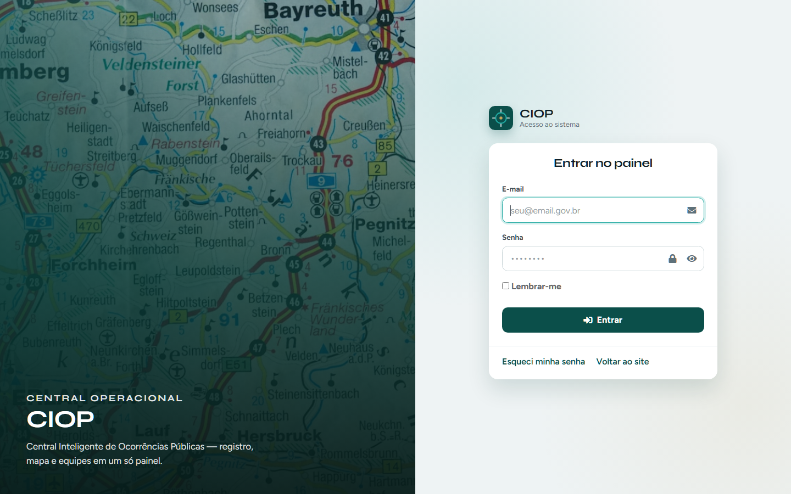
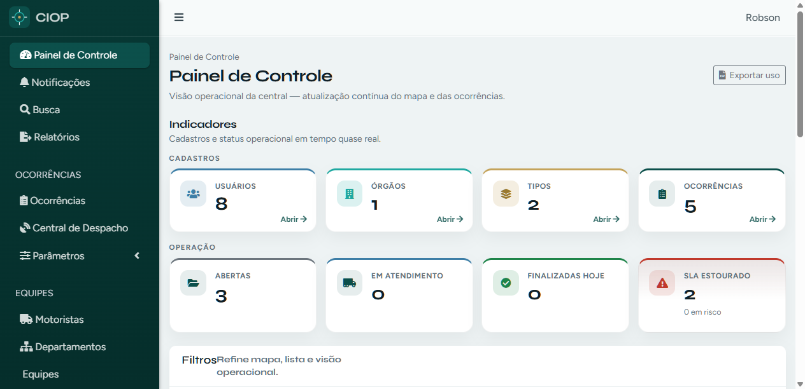
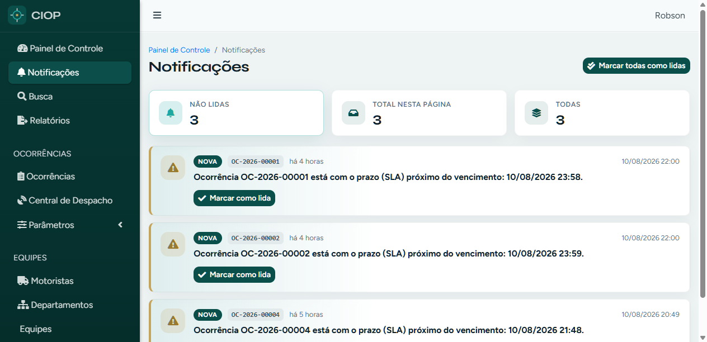
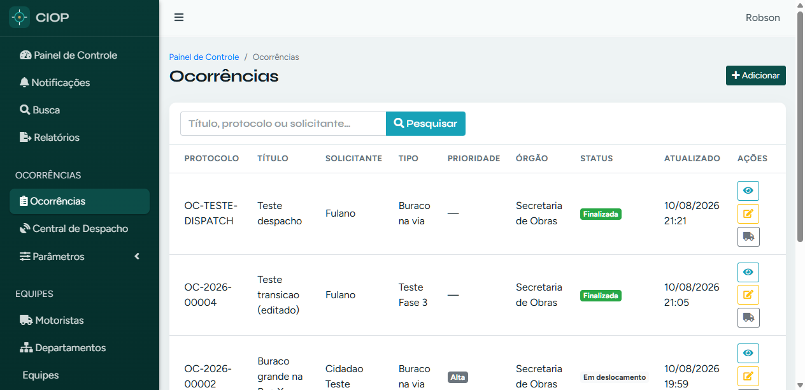

Operadores, supervisores, administradores e agentes de campo
Ambiente local de referência
http://127.0.0.1:8010
Este guia ensina a navegar na aplicação: site público, login, painel administrativo e área do motorista. As imagens foram capturadas da interface real.
O CIOP é uma plataforma web para registrar, priorizar, despachar e acompanhar ocorrências públicas (buracos, alagamentos, reparos de vias e outras demandas de órgãos públicos), com:
mapa e geolocalização;
protocolo e prioridades;
painel do agente de campo com GPS;
notificações, auditoria e multi-organização (tenant).
2. Stacks utilizadas
Backend
Tecnologia
Uso
PHP 8.1 + Laravel 8
Aplicação monolítica (web + API)
PostgreSQL
Banco principal
Redis + fila
Jobs assíncronos
Laravel Sanctum
Autenticação da API
laravel/ui
Login web
Spatie Activity Log
Auditoria
Pusher PHP + Soketi
Broadcast / tempo real
DomPDF / Maatwebsite Excel
Relatórios exportáveis
AWS S3 / MinIO
Arquivos e evidências
Frontend / UI
Tecnologia
Uso
AdminLTE 3 + Bootstrap 4
Shell do painel
Blade
Templates server-side
Vue 2
Componentes pontuais (ex.: tracker)
Leaflet + OpenStreetMap
Mapas (sem Google billing)
Chart.js
Gráficos do dashboard
Laravel Echo + pusher-js
Atualização em tempo real
CSS custom ciop-admin / site-theme
Identidade visual teal CIOP
Infra
Tecnologia
Uso
Docker Compose
Ambiente local
Fly.io
Deploy
PHPUnit
Testes automatizados
3. Perfis de acesso
Perfil
O que faz no sistema
Administrador
Configura organização, usuários, cargos, permissões e parâmetros
Supervisor / Central
Triagem, despacho, SLA, mapa e acompanhamento
Atendente
Abertura e acompanhamento de ocorrências
Motorista / Agente
Aceita ocorrências, atualiza status e envia GPS
O menu lateral só mostra itens permitidos para o seu cargo.
4. Acesso e login
4.1 Site público (landing)
Abra a URL da aplicação (ex.: http://127.0.0.1:8010/).
Use Acessar ou Acessar o sistema para ir ao login.
Navegue pelas âncoras: Obras, Recursos, Mapa, Como funciona.

Landing page CIOP
4.2 Tela de login
Informe e-mail e senha.
Opcional: marque Lembrar-me.
Clique em Entrar.
Após o login, você é direcionado ao Painel de Controle (admin) ou ao Painel do Motorista, conforme permissões.

Tela de login
Esqueceu a senha? Use o link Esqueci minha senha na própria tela de login.
5. Mapa do menu
Com a sessão autenticada, o menu esquerdo organiza as áreas:
Grupo
Itens
Para quê
Topo
Painel de Controle, Notificações, Busca, Relatórios
Visão geral e consulta
Ocorrências
Ocorrências, Central de Despacho, Parâmetros (Status, Tipos, Prioridades, Órgãos)
Operação do dia a dia
Equipes
Motoristas, Departamentos, Equipes
Estrutura de campo
Acesso
Usuários, Perfis, Cargos, Permissões, Auditoria
Segurança e ACL
Engajamento
Pesquisas
Formulários / feedback
Sistema
Empresas, Organização
Tenant e configurações
Área do Motorista
Painel Motorista, Minhas Ocorrências
Operação em campo
No topo direito, o nome do usuário permite Sair.
6. Painel de Controle
URL:/admin
É a home operacional da central.
O que você encontra
Indicadores — Cadastros: usuários, órgãos, tipos, total de ocorrências (com atalho Abrir).
Indicadores — Operação: abertas, em atendimento, finalizadas hoje, SLA estourado.
Filtros: status, tipo, prioridade, motorista e período.
Ocorrências recentes + mapa (Leaflet) lado a lado no desktop.
Análises: gráficos por dia, status e prioridade.
Exportar uso: CSV com métricas da organização.

Painel de Controle
Como usar
Leia os cards de operação para priorizar o dia.
Aplique filtros e clique em Aplicar filtros.
Clique em uma ocorrência recente para abrir o detalhe.
No mapa, use Mapa de calor se quiser densidade espacial.
Role até Análises para ver tendência dos últimos 14 dias.
7. Notificações
URL:/admin/notifications
O que você encontra
Cards de resumo: Não lidas, Total nesta página, Todas.
Lista em cards com protocolo, mensagem, horário e ações.
Botão Marcar todas como lidas.

Notificações
Como usar
Identifique alertas de SLA (ícone de alerta).
Clique em Marcar como lida (ou Abrir, se já lida) para seguir o link da ocorrência.
Use Marcar todas como lidas ao limpar a caixa.
8. Ocorrências
URL:/admin/occurrences
O que você encontra
Busca por título, protocolo ou solicitante.
Tabela com protocolo, tipo, prioridade, órgão, status e data.
Ações: Ver, Editar, painel do motorista.
Botão + Adicionar para nova ocorrência.

Lista de ocorrências
Como cadastrar (resumo)
Clique em Adicionar.
Preencha título, endereço/coordenadas, tipo, prioridade, órgão e status.
Anexe evidências, se necessário.
Salve e, se for o caso, atribua motorista/equipe.
9. Central de Despacho
URL:/admin/dispatch
Console para triagem e despacho com lista e mapa.
Recursos
Chips rápidos: Todas, Críticas, Últimas 24h, Em aberto, Sem atendimento, Próximas.
Use o menu hambúrguer no mobile para abrir/fechar a sidebar.
No Painel, os indicadores Atualizam a lista/mapa periodicamente (cerca de 1 minuto).
Prefira filtros antes de varrer tabelas grandes.
Em caso de erro ao salvar (ex.: pesquisas), atualize a página e tente novamente; se persistir, contate o administrador técnico.
Faça logout ao usar computador compartilhado.
Glossário rápido
Termo
Significado
Ocorrência
Registro de demanda/atendimento público
Protocolo
Identificador único (ex.: OC-2026-00001)
SLA
Prazo-alvo de atendimento
Tenant / Organização
Prefeitura ou órgão isolado no multi-tenant
Despacho
Atribuição da ocorrência a um motorista/equipe
Leaflet
Biblioteca de mapas usada no painel
Suporte
Para dúvidas de operação, fale com o administrador da organização. Para questões técnicas de infraestrutura, consulte a equipe responsável pelo deploy (Docker / Fly.io).
Documento gerado a partir da navegação real da aplicação CIOP. Não contém senhas, tokens ou chaves privadas.
Documento gerado a partir da navegação real da aplicação. Não contém secrets. Versão 1.0 — 11/08/2026.